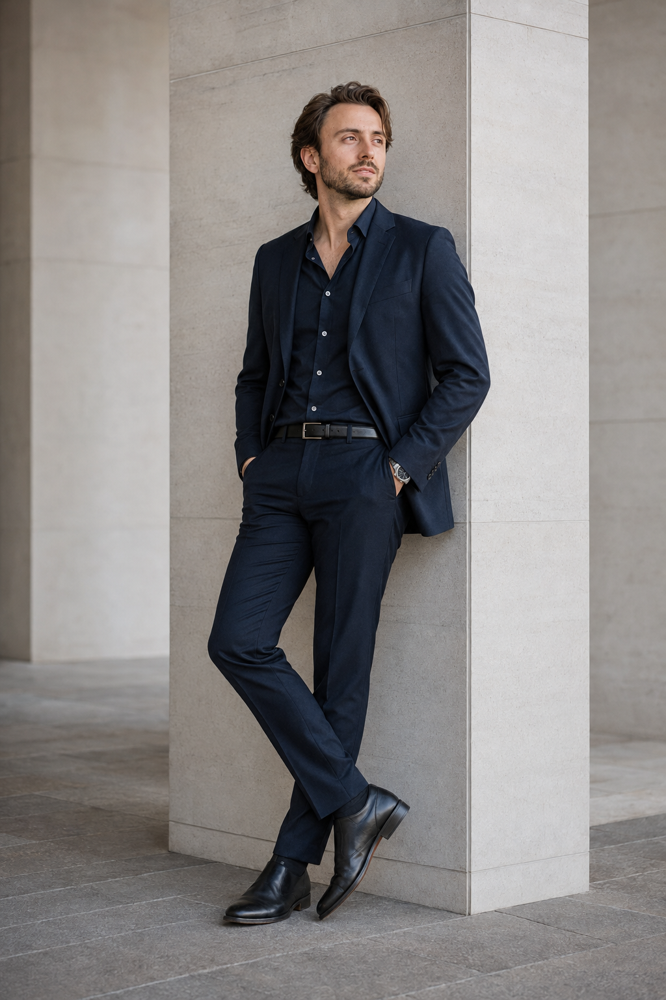

01 · Product case study
Via Production
A scalable video production management platform designed to help marketing teams create more content without sacrificing quality, cost, or creative freedom.
Explore the case studyProduct manager · systems thinker
I connect customer insight, strategy, and execution to build products that are useful, measurable, and ready to scale.

Strategy
→ clarity
Curiosity is
a product skill.
A little context

I’m a former designer turned product manager, passionate about automation, data, and the small details that make a product click. I’ve led teams, built systems, and learned to translate fuzzy questions into useful next steps.
Today I’m especially interested in products at the intersection of technology, creativity, and Web3.
My process is deliberately lightweight: understand the customer, align on the outcome, ship the smallest useful version, and keep learning from evidence.
I work as the bridge between customer needs, business goals, design, and engineering. Owning the why, making trade-offs visible, and keeping the team moving toward a meaningful outcome.
Start a conversationA principle I carry
“Good automation removes friction, not ownership.”
Technology should make people more capable, not less involved. The best systems create space for better judgment, better craft, and better work.
- Gabriele O. DonatiSelected work
01 · Product case study
A scalable video production management platform designed to help marketing teams create more content without sacrificing quality, cost, or creative freedom.
Explore the case studyTurning repetitive workflows into calm, visible systems.
Connecting signals to the choices a team needs to make.
Giving talented people clarity without taking away their craft.
Case studies
Work case study
Helping a high-volume branded-content workflow produce more independently, with less repetitive work and more room for creative decisions.
Read the case study ↗Personal product exploration
A focused exploration of classification, automation, trust, and human review for messy files.
See the product thinking ↗Strengths
Vision, positioning, prioritization, and roadmaps that stay connected to outcomes.
Practical rituals and operating models that help cross-functional teams execute.
Research, synthesis, and storytelling that keep the user's reality in the room.
Calm communication, clear decisions, and momentum through ambiguity.
Have a good problem?
Tell me what you’re building, what feels stuck, or what you’re curious about.